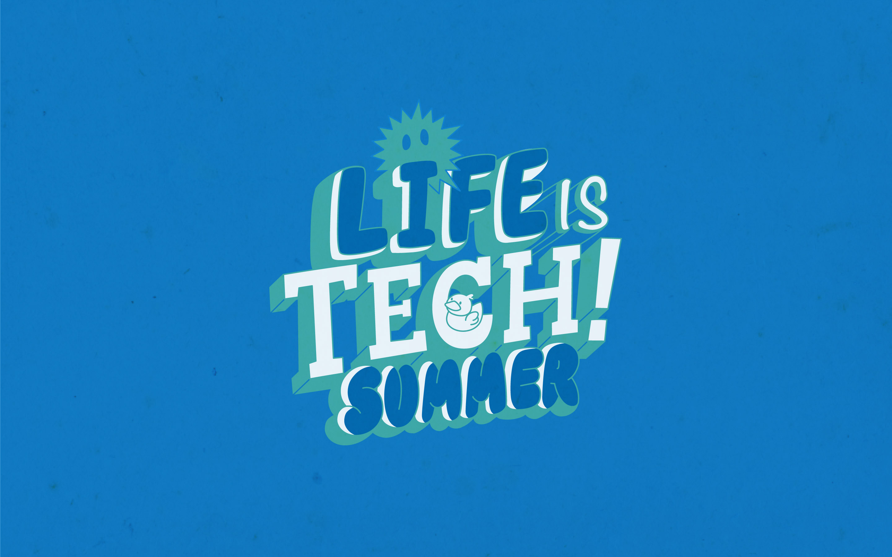
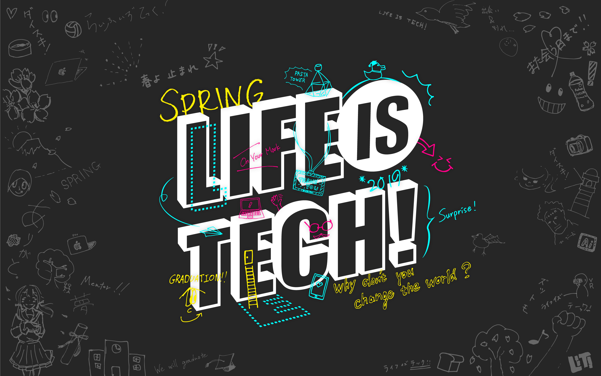
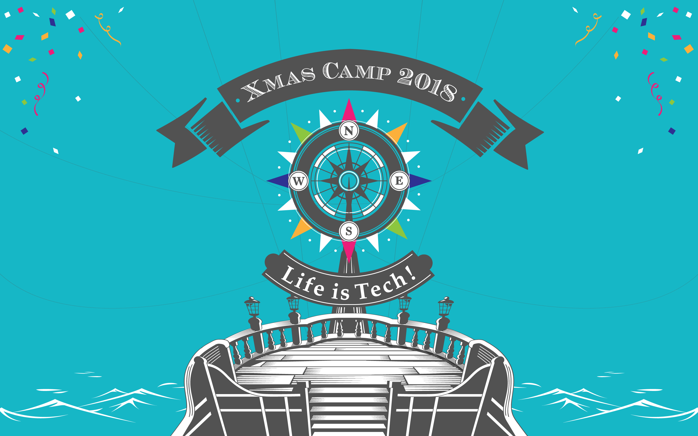
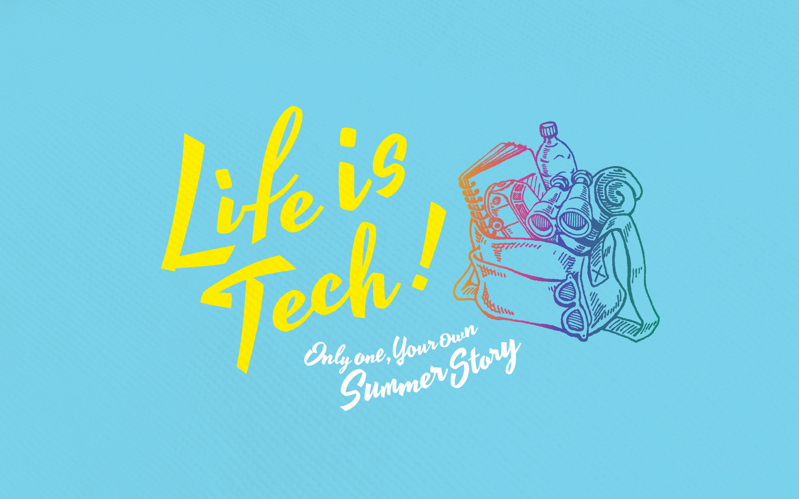
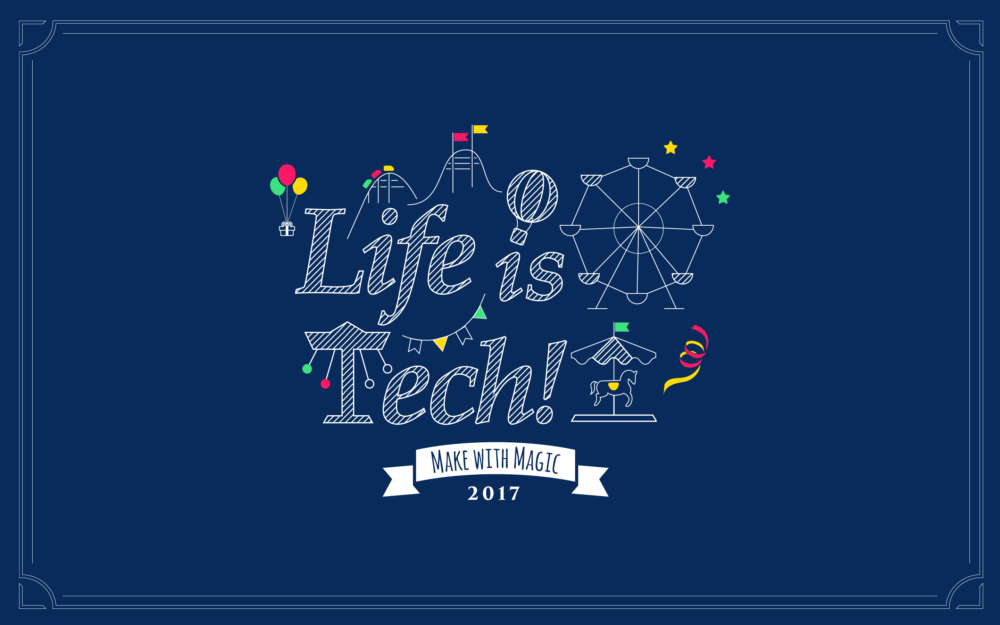
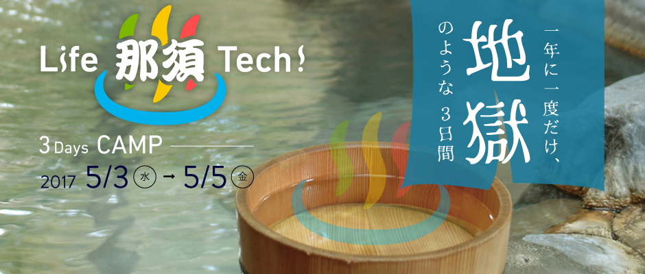
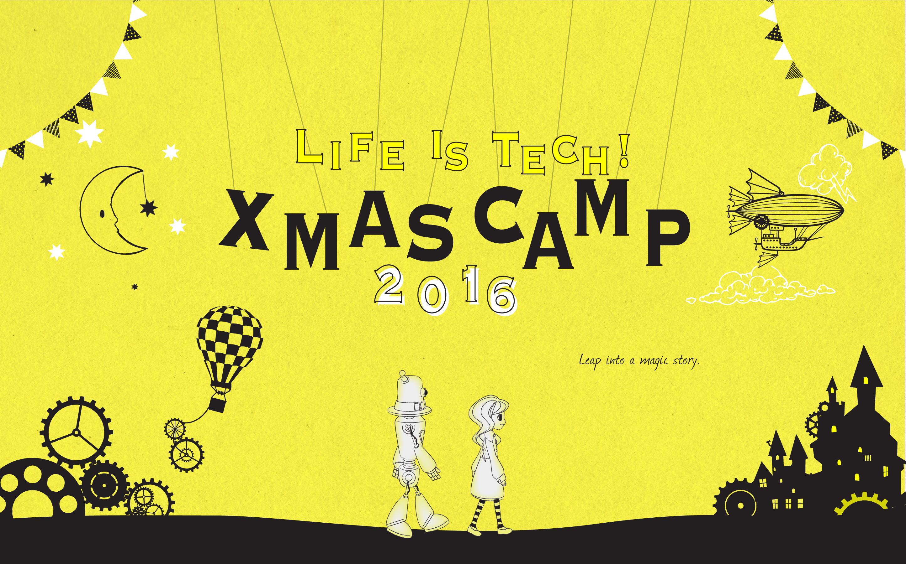
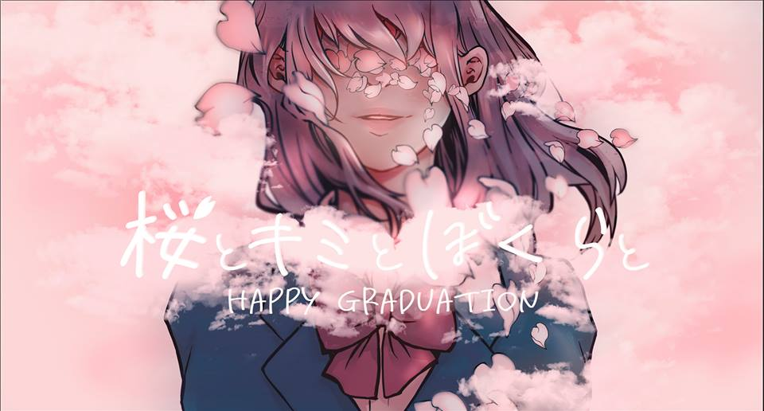
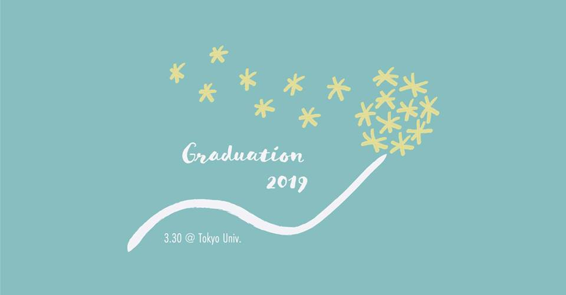

2019
'19 Summer Camp『夏』が、好きだああああああああああああ。


雀ノ欠伸Saucy Dog
サントリー天然水 GREEN TEA「徒然なる トリビュート」 参加楽曲

Playerchelmico
Apple Watch Series4 CMソング
Life 伊豆 Tech !(2019)社会が抱える実課題をIT×Teamで解決!

'19 Spring Camp春よ止まれ


拝啓、少年よHump Back
チェンジユアワールドgo!go!vanillas

Tを探そうTT兄弟
注意点「Tを探そう・Cを探そう」元ネタ
2018
'18 Xmas Camp一年に一度だけ、魔法のような数日間。 -Make with magic-


ループedda

予感SUPER BEAVER
'18 Global IT CampThink globally, Change the world!

はじまりMrs. GREEN APPLE feat. キヨサク from MONGOL800
オープニング楽曲

ClassicMKTO

Somebody to youThe Vamps
'18 Summer Camp世界にひとつだけ、あなただけの夏の「物語」へ。 -Only one Your own Summer Story-

はじまりMrs. GREEN APPLE feat. キヨサク from MONGOL800

I WANT YOU BACKThe Jackson 5 feat. TWICE
'18 Spring Camp始まりの春。 -STARTING-


始まりの朝Official髭男dism

HollowDNCE

さくら体操NHK
2017
'17 Xmas Campさあ、とっておきの世にも素敵な魔法の世界へ -MAKE WITH MAGIC-


ONEAimer

ハピネスAI
コカ・コーラ 冬期CMソング

ようこそジャパリパークへどうぶつビスケッツ×PPP
けものフレンズ 主題歌（MC紹介映像BGM）
'17 Summer Camp夏が君を動かす。君が世界を動かす。-Move-

明日もSHISHAMO
NTTドコモ"ドコモの学割「ししゃも？」篇" CMソング

鱗秦基博

SHINY夜の本気ダンス
NHK Eテレ テレビアニメ「境界のRINNE」第3シリーズ OPテーマソング

By My Side夜の本気ダンス
'17 Life 那須 Tech !一年に一度だけ、地獄のような３日間


見たこともない景色菅田将暉
au「au BLUE CHALLENGE」「応援」編 CMソング

StayZedd & Alessia Cara
'17 Spring Camp閃け！春！Spark -Spark! Spring!-


Next Stage with YOUPerfume
メルセデス・ベンツ × Perfume コラボレーションCMソング

さよならバイスタンダーYUKI
TVアニメ「３月のライオン」オープニングテーマ

やってみようWANIMA
au 冬期CMソング

キャリア・ウーマンブルゾンちえみ
注意点ヒューマン元ネタ
さくら体操NHK
2016
'16 Xmas Camp一年に一度だけ、特別な数日間。-Leep into a magic story.-


Hey HoSEKAI NO OWARI

PPAP(ペンパイナッポーアッポーペン)ピコ太郎
'16 Summer Camp世界なんて、ひと夏で変わる。 -LIVE AN ADVENTUROUS-


CAN'T STOP THEE FEELING!JUSTIN TIMBERLAKE

シュガーソングとビターステップUNISON SQUARE GARDEN
TVアニメ「血界戦線」エンディングテーマ

宝石になった日BUMP OF CHICKEN

Green Birdフジファブリック

MUSIC VIDEO岡崎体育
'16 Spring Campまだ見ぬ世界に全力でワクワクしよう。 -Next World-


シルエットKANA-BOON
TVアニメ「NARUTO -ナルト- 疾風伝」オープニングテーマ

Tell The WorldEric Hutchinson

ランアンドランKANA-BOON

PERFECT HUMANRADIOFISH
さくら体操NHK
2015
'15 Dec-'16 Jan Be Startup Coca-Cola Camp世の中にないもの、『私』が生み出す。
ハピネスAI
コカ・コーラ 冬期CMソング

螢のテーマAI
北の国から 遥かなる大地より
'15 Xmas Camp5日間だけの魔法の世界へ、ようこそ -Make with Magic-


新宝島サカナクション
映画 バクマン。 主題歌
ハピネスAI
コカ・コーラ 冬期CMソング

Share The Love三代目 J Soul Brothers
Pocky CMソング

ハレ晴レユカイ涼宮ハルヒ(平野綾)/長門有希(茅原実里)/朝比奈みくる(後藤邑子)
TVアニメ「涼宮ハルヒの憂鬱」エンディングテーマ

あたりまえ体操COWCOW
'15 Summer Camp世界で一番、ココロ踊る「夏」を。 -A SUMMER THAT ROCKS YOUR HEART-


Come On! Come On! -Happy with Smile-THE UNITED

BeautifulSuperfly
あたりまえ体操COWCOW
'15 Jun. YOSHIMOTO TECHDAY

Life 伊豆 Tech !(2015)一年に一度だけ、地獄のような３日間


バリバリ最強No.1FEEL SO BAD
'15 萩1Day

超特急ラインもっぴーさうんど
'15 Spring Campすべてがサプライズの春キャンプへ -Surprise Everything-

超特急ラインもっぴーさうんど

ひまわりの約束秦基博
STAND BY ME ドラえもん 主題歌

HappilyOne Direction
さくら体操NHK
2014
'14 Xmas Camp一年に一度だけ、魔法のような4日間

Dragon NightSEKAI NO OWARI

I Won't Let You DownOK Go
ハピネスAI
コカ・コーラ 冬期CMソング
'14 Summer Camp夏のすべてが詰まってる


'14 English × IT Camp

HappyRharrell Williams
'14 Spring Camp出会い、別れ、はじまり

スターラブレイションケラケラ

変わらないもの奥華子
アニメ映画「時をかける少女」挿入歌
2013
'13 Xmas Camp

恋するフォーチュンクッキーAKB48
ハピネスAI
コカ・コーラ 冬期CMソング
'13 Summer Campきっと忘れられない夏になる。

RPGSEKAI NO OWARI
映画「クレヨンしんちゃん バカうまっ!B級グルメサバイバル!!」主題歌
'13 Spring Camp

Boom!Maia Hirasawa
「JR九州/祝！九州キャンペーン」CMソング

ODDS&ENDSryo(supercell) feat. 初音ミク
ゲーム「初音ミク -Project Diva- f」テーマソング

さよならメモリーズsupercell
2012
'12 Xmas Camp
ハピネスAI
コカ・コーラ 冬期CMソング
'12 Summer Camp

君の知らない物語supercell
TVアニメ「化物語」エンディングテーマ

Overture of the Summer Wars松本晃彦
アニメ映画「サマーウォーズ」挿入歌
番外編
メンター/コース紹介

WingsLittle Mix
スクール夏期講習(2016)

PERFECT BLUEBase Ball Bear
メンター講習テーマ

SUN星野源
Happy Graduation(関西卒業サプライズ2019)桜とキミとぼくらと


桜のあと (all quartets lead to the?)UNISON SQUARE GARDEN

桜ノ雨absorb feat 初音ミク
Graduation 2019(関東卒業サプライズ2019）


パープルコレサワ
ロート製薬 肌ラボ 恋する肌キュンmovie 第4弾 キャンペーンソング